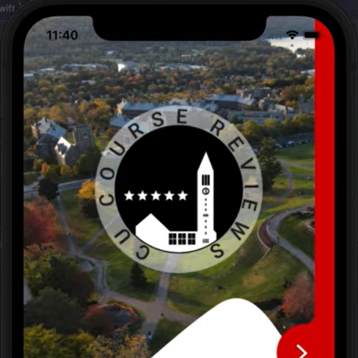

tanks game
Start Date: jun 17, 2022
End Date: N/A
Description:
I wanted to put my coding skills in practice over the summer and create my very first game from scratch. By implementing a game such as this, I will be able to learn more about the process of game development and creating interfaces. I will be able to design a game, implement it, and test the game throughout my process.
link to project

cu course reviews
Start Date: apr 29, 2021
End Date: may 12, 2021
Description:
CU Course Reviews is an IOS-based application that provides easy access to course reviews and allows students to review courses. This app won best interface for Cornell University's Hack Challenge, Spring '21.
Contributors:
Heysil Baez, John Fernandez, Camellia Guan, Miranda Medina
link to project link to video